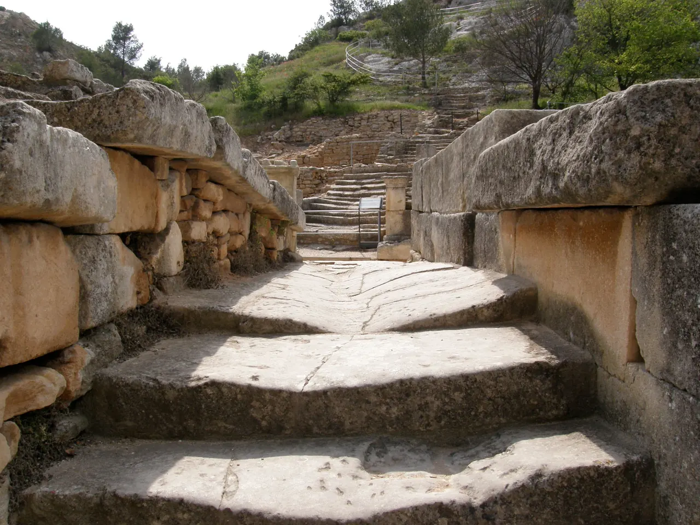

{kind=link}
관광·미술관
Nous avons déjà des billets.
이미 표가 있습니다.
누 자봉 데자 데 비예

생레미 남쪽 알피유 산맥 계곡 입구에 자리한 프랑스에서 가장 중요한 고대 복합 고고학 발굴 유적지(Site Archéologique)다.
기원전 6세기 켈트-리구리아 인들이 치유의 신 '글란(Glan)'에게 바친 성스러운 샘(Source sacrée)을 중심으로 형성되어, 마르세유를 통한 그리스 헬레니즘 문화를 거쳐, 기원전 1세기 아우구스투스 황제 치세에 거대한 로마 도시로 완성되었다.
서기 260년 알레만니족의 침략으로 완전히 파괴되고 매몰되었다가 1921년 흙더미 속에서 기적적으로 발굴되었으며, 도로변에는 갈리아 지방에서 가장 오래되고 완벽하게 보존된 기원전 1세기 개선문(Arc de triomphe)과 영묘(Mausolée des Julii) '레 장티크(Les Antiques)'가 우뚝 서 있다.
"단순한 폐허가 아니라, 켈트 원시 신앙에서 그리스식 아고라를 거쳐 로마식 포룸과 공중목욕탕으로 이어지는 800년간의 문명 교체 과정을 걸어서 확인하는 고고학의 현장이다." 도로변의 개선문과 영묘(무료)를 둘러보고, 유적지 내부로 들어가 신전 터와 치유의 샘을 따라 산비탈 전망대까지 오르는 60~75분 코스를 추천한다.
| 항목 | 상세 정보 |
|---|---|
| 위치 | Avenue Vincent Van Gogh, 13210 Saint-Rémy-de-Provence |
| 운영 시간 | 매일 09:30–18:00 (월요일 휴무 동절기 적용, 마지막 입장 45분 전) |
| 입장료 | Les Antiques (개선문/영묘): 야외 무료 상시 조망 / Glanum 유적지 내부 일반 성인 €8.00, 18세 미만 무료 |
| 주차장 | 유적지 건너편 유료 공영 주차장 (Saint-Paul-de-Mausole 주차장 도보 3분 연계 가능) |
| 연계 동선 | Saint-Paul-de-Mausole에서 도보 3분 거리 |
Nous avons déjà des billets.
이미 표가 있습니다.
누 자봉 데자 데 비예
On peut prendre des photos ?
사진 찍어도 되나요?
옹 푀 프랑드르 데 포토
Où commence la visite ?
관람은 어디서 시작하나요?
우 코망스 라 비지트

높이 15m 거대한 지하 백색 석회암 채석장 동굴 전체를 디지털 캔버스로 변모시킨 세계 최초·최대 규모의 몰입형 미디어 아트 공간. 7,000㎡ 암벽과 바닥을 감싸는 빛과 음악의 향연.

알피유(Alpilles) 산맥 해발 245m 석회암 절벽 위에 우뚝 솟은 중세 독수리 요새 마을. 자연 암반과 성벽이 하나로 결합된 레보 성채(Château des Baux) 폐허와 올리브 계곡 대파노라마.

세계적인 식물학자 파트리크 블랑의 300㎡ 거대한 수직 정원(Mur Végétal) 외벽 아래 40여 개 프로방스 전통 식재료 좌판이 모인 아비뇽의 활기찬 실내 중앙 미식 시장.

14세기 가톨릭 교황청이 로마를 떠나 68년간 머물렀던 서유럽 최대의 중세 고딕 요새 궁전. 베네딕토 12세의 구궁전과 클레멘스 6세의 신궁전, 마테오 조바네티의 프레스코화와 히스토패드 3D 증강현실 복원.

12세기 론(Rhône) 강을 건너 교황령 아비뇽과 프랑스 왕국을 잇던 920m의 유일한 석조 다리. 소빙하기의 거센 홍수로 22개 아치 중 4개와 2층 생니콜라 예배당만 남은 유네스코 세계유산.

우제스의 외르 샘에서 고대 로마 식민도시 님(Nîmes)까지 50km를 오직 중력만으로 흐르게 한 기원 1세기 3층 로마 수도교. 높이 48.8m 세계 최고(最高)의 고대 수력 토목공학 걸작(유네스코 세계유산).